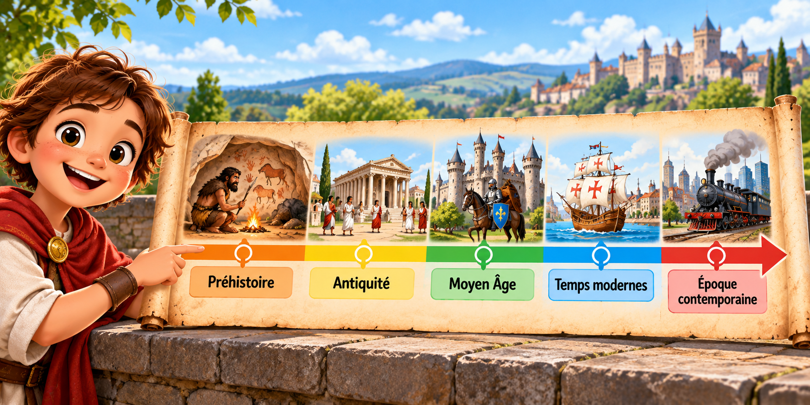
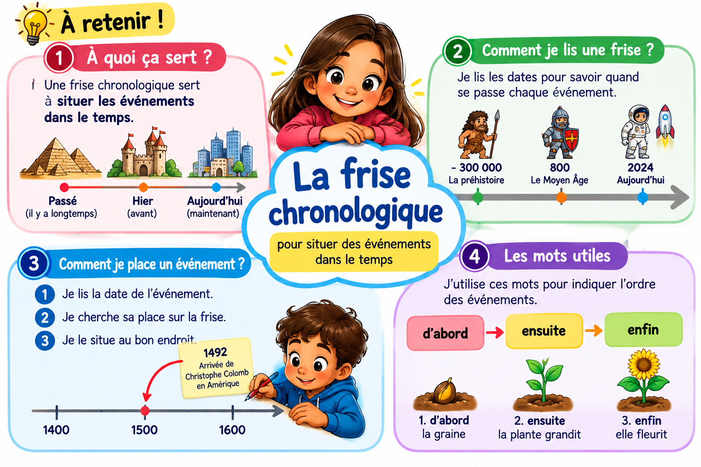

MAÎTRE HIBOU · HISTOIRE · CE2 · PÉRIODE 1
Utiliser une frise chronologique
Lire les dates et situer un événement
Je découvre
Observe les exemples suivants.

En quelle année Lina est-elle entrée au CP ?
Je comprends
Une frise chronologique représente le passage du temps. Sur cette frise, les dates augmentent de gauche à droite. Les années sont placées à intervalles réguliers.
La lecture de gauche à droite permet de visualiser la succession des événements ou des périodes.
Leçon — À retenir
